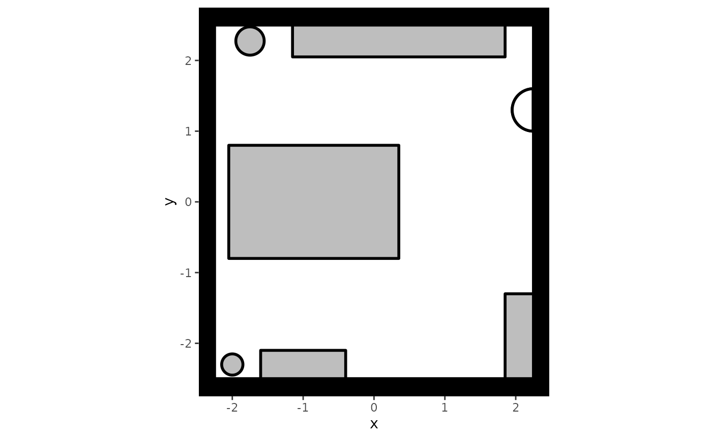
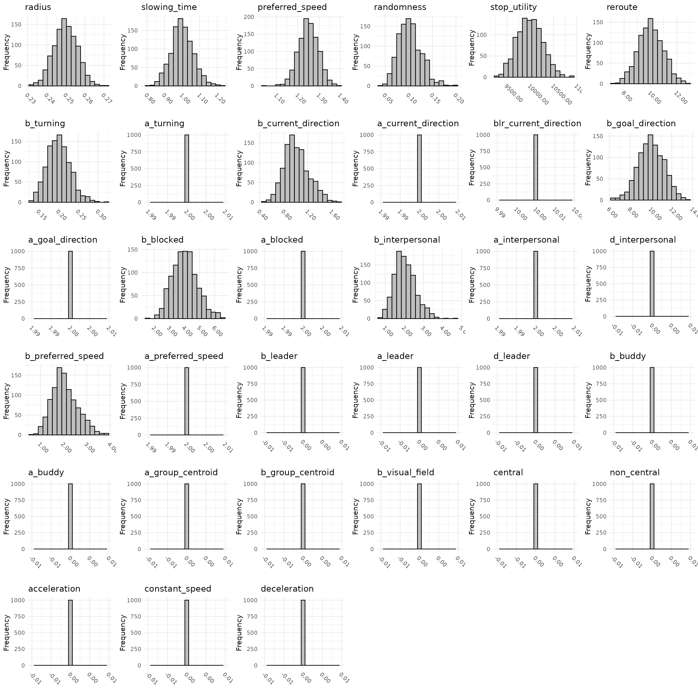
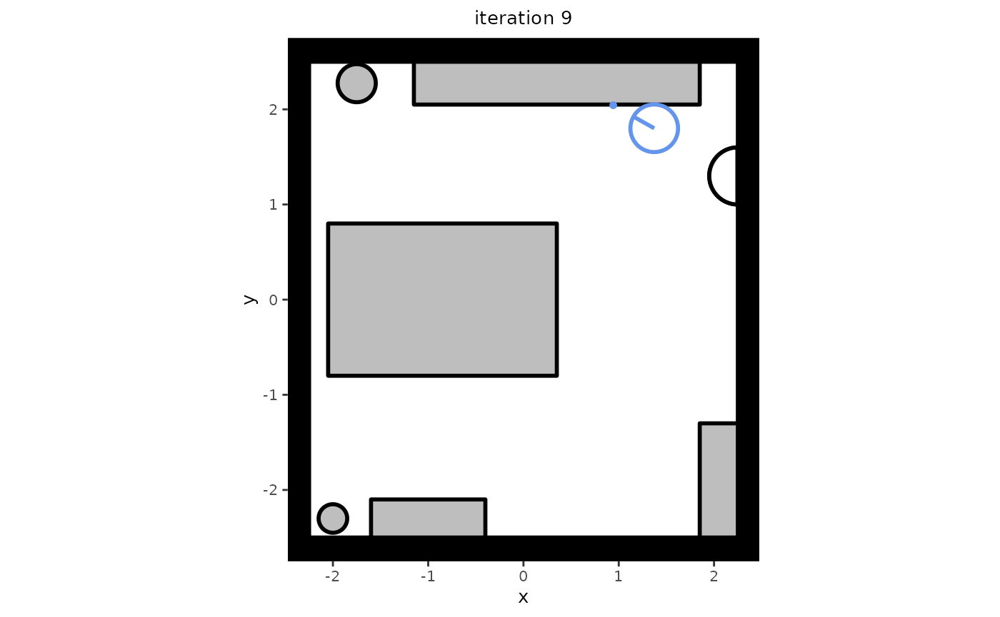

One of the major functionalities of the predped package
is allowing users to simulate data according to the Minds for Mobile
Agents pedestrian model (M4MA). In this section, we will detail the
workflow for carrying out basic simulations. Please see the vignette on
Advanced
Simulations for ways in which you can personalize the
simulations in predped.
Defining an Environment
First, one should define the environment in which the agents are
expected to walk around. Within predped, we currently allow
for the creation of a space at a single floor, which may represent a
single room (e.g., an office or a supermarket) or a collection of
connected rooms (e.g., a tunnel under a train station containing several
stores). To define such a space, one should create an instance of the background
class, defining the following attributes:
-
shape: An instance of theobjectclass that defines the shape of the setting; -
objects: A list ofobjects defining the obstacles in the setting; -
entrance,exit: Numeric matrices defining the entrances and/or exits of the space; -
limited_access: A list ofsegments that restrict the movement of the agents within the space (see Advanced Simulations).
As an example, let’s define a rectangular environment that represents our office:
# Recreate our office
my_background <- background(
# Shape of the environment
shape = rectangle(
center = c(0, 0),
size = c(4.5, 5)
),
# Objects contained within the environment
objects = list(
# Desks
rectangle(
center = c(-0.85, 0),
size = c(2.4, 1.6)
),
# Cabinets
rectangle(
center = c(-1, -2.3),
size = c(1.2, 0.4)
),
rectangle(
center = c(2.05, -1.9),
size = c(0.4, 1.2)
),
# Big bookcase
rectangle(
center = c(0.35, 2.275),
size = c(3, 0.45)
),
# Plants
circle(
center = c(-1.75, 2.275),
radius = 0.2
),
circle(
center = c(-2, -2.3),
radius = 0.15
)
),
# Location of the entrance to our office
entrance = c(2.25, 1.3)
) To visualize what this setting looks like, we can use the plot
method:
plot(my_background)
#> Loading required namespace: ggplot2
It is often useful to create your setting by going back and forth between adding an object and plotting the result, especially when the environment contains many different objects.
Interactability
By default, predped assumes that all objects in the
environment can be interacted with. However, as this assumption may not
apply to all situations, we also allow users to limit the
interactability of the objects in their environment. This is done in two
ways.
First, users can make a complete object non-interactable by setting
the interactable argument of the constructors for
rectangles, polygons, and circles
to FALSE, such as in the following examples:
# Turn off interactability of the objects
my_rectangle <- rectangle(
center = c(0, 0),
size = c(1, 1),
interactable = FALSE
)
my_polygon <- polygon(
points = rbind(
c(1, 1),
c(1, -1),
c(-1, -1),
c(-1, 1)
),
interactable = FALSE
)
my_circle <- circle(
center = c(0, 0),
radius = 1,
interactable = FALSE
)Please note that if none of the objects in a given
background are interactable, agents will enter the space
and immediately leave again through one of the provided exits.
Another way in which interactability can be limited is through
specifying the forbidden_edges argument in the same
constructors. Essentially, this argument tells predped
which regions of the objects cannot be interacted with. For
polygons and rectangles, this amounts to
providing the indices of the edges that cannot be interacted with, for
example:
my_polygon <- polygon(
points = rbind(
c(1, 1),
c(1, -1),
c(-1, -1),
c(-1, 1)
),
forbidden = c(1, 3)
)and defining , , , and , then the edges that cannot be interacted with are the lines and . This can be seen by executing the following code:
# Create the edges by extracting the coordinates that make up the polygon and
# then combining them in fixed order
coords <- points(my_polygon)
edges <- cbind(coords, coords[c(2:nrow(coords), 1), ])
# Identify those edges that cannot contain a goal
idx <- forbidden(my_polygon)
edges[idx, ]
#> [,1] [,2] [,3] [,4]
#> [1,] 1 1 1 -1
#> [2,] -1 -1 -1 1The same ideas apply to the rectangle, using the output
of the points
method to create the relevant edges.
For circles, there are no discrete edges that can be
indexed like for polygons and rectangles.
Within predped, we therefore use angles to specify the
locations on the circle that cannot be interacted with,
taking the shape of a matrix containing the starting and the ending
angles of the interval in which no goal can be contained. Consider the
following example, where we create a circle that cannot contain a goal
in the region
.
# Define a circle with forbidden angles ranging from
# 0 to pi
my_circle <- circle(
center = c(0, 0),
radius = 1,
forbidden = matrix(c(0, pi), nrow = 1)
)Note that the angles should be specified in radians, not in degrees.
To simplify the specification of the forbidden argument,
users can visualize the non-interactable locations when visualizing the
environment. Redefining our office to include non-interactable
locations:
# Adjust the office to contain forbidden edges
my_background <- background(
shape = rectangle(
center = c(0, 0),
size = c(4.5, 5)
),
objects = list(
rectangle(
center = c(-0.85, 0),
size = c(2.4, 1.6),
forbidden = 1
),
rectangle(
center = c(-1, -2.3),
size = c(1.2, 0.4),
forbidden = c(1, 3, 4)
),
rectangle(
center = c(2.05, -1.9),
size = c(0.4, 1.2),
forbidden = 2:4
),
rectangle(
center = c(0.35, 2.275),
size = c(3, 0.45),
forbidden = 1:3
),
circle(
center = c(-1.75, 2.275),
radius = 0.2,
forbidden = rbind(
c(0, 5 * pi / 4),
c(7 * pi / 4, 2 * pi)
)
),
circle(
center = c(-2, -2.3),
radius = 0.15,
forbidden = rbind(
c(0, pi / 4),
c(3 * pi / 4, 2 * pi)
)
)
),
entrance = c(2.25, 1.3)
)We can then visualize these locations as through calling the
plot method:
# Plot the background with forbidden locations
plot(
my_background,
plot_forbidden = TRUE,
forbidden.color = "red"
)
In this plot, non-interactable locations are visualized in red.
Note that interactability of an object will automatically be limited by where the objects are placed in the environment. More concretely, agents cannot interact with locations that they cannot reach, such as sides of an object that stand against another object or a wall. You do not need to specify this explicitly, though it may help during the setup of your simulation study.
Debugging
There are some known issues or limitations regarding the background
class that users should be aware off when creating their own
environments. These are included here:
- Instances of the
segmentclass cannot be included as an object in theobjectsargument, as they solely exist to restrict the directionality of the pedestrian flow within an environment.
Defining Agents
Once an environment has been defined, one should define the
characteristics of the agents that are expected to walk around in this
environment. The mapping of the setting with the agents is achieved
through specifying an instance of the predped
class. It has the following attributes:
-
setting: An instance of thebackgroundclass defining the environment in which agents should walk around; -
archetypes: A character vector containing the names of the types of agents you want to include; -
weights: A numerical vector denoting the probability with which each agent type can be found within the environment; -
parameters: A list containing all necessary parameter information forpredpedto be able to simulate distinct agents.
One can create an instance of the predped class through
its constructor, for example by calling:
# Create instance of predped class with our office and the default
# parameters
my_predped <- predped(setting = my_background)
my_predped
#> Model object:
#> ID: model eqmfa
#> Parameters taken from the BaselineEuropean, BigRushingDutch, DrunkAussie, CautiousOldEuropean, Rushed, Distracted, BaselineEuropean1, BigRushingDutch1, DrunkAussie1, CautiousOldEuropean1, Rushed1, Distracted1, Lost, SociallyAnxious, SocialBaselineEuropean, SocialBigRushingDutch, SocialDrunkAussie, SocialCautiousOldEuropean archetypes.This specification connects the previously defined environment to the
type of agents that should walk around in it. By default, all archetypes
defined in the project’s can join the simulation with an equal
probability. If you wish to limit the number of types of agents that can
walk around in the simulation and/or wish to change these probabilities,
one can specify the archetypes and weights
arguments of the constructor. For example, specifying:
# Create instance of predped class with our office and two of the
# default agent-types
my_predped <- predped(
setting = my_background,
archetypes = c(
"BaselineEuropean",
"DrunkAussie"
),
weights = c(0.75, 0.25)
)
my_predped
#> Model object:
#> ID: model amrew
#> Parameters taken from the BaselineEuropean, DrunkAussie archetypes.states that you only want "BaselineEuropean"s and
`“DrunkAussie”’s to walk around in the environment, where the former has
a 75% probability of joining the environment while the latter only has a
25% probability of doing so.
Parameters
Given the importance of knowing which agent-types exist by default,
and given the importance of personalization in specifying the agent
characteristics (see Advanced
Simulations), it is useful to explain the parameter structure
used by predped.
To do so, we first load the default parameters of the package with
the load_parameters
function and inspect its type and structure:
params <- load_parameters()
typeof(params)
#> [1] "list"
names(params)
#> [1] "params_archetypes" "params_sigma" "params_bounds"As one can see, the variable params is a named list
containing the slots "params_archetypes",
"params_sigma", and "params_bounds". Each slot
serves a different purpose in the specification of agents, as we detail
below.
First, the "params_archetypes" slot contains a
data.frame connecting the names of the agent types with the
parameters that belong to this type. The data.frame
contains the following columns:
colnames(params$params_archetypes)
#> [1] "name" "color" "radius"
#> [4] "slowing_time" "preferred_speed" "randomness"
#> [7] "stop_utility" "reroute" "b_turning"
#> [10] "a_turning" "b_current_direction" "a_current_direction"
#> [13] "blr_current_direction" "b_goal_direction" "a_goal_direction"
#> [16] "b_blocked" "a_blocked" "b_interpersonal"
#> [19] "a_interpersonal" "d_interpersonal" "b_preferred_speed"
#> [22] "a_preferred_speed" "b_leader" "a_leader"
#> [25] "d_leader" "b_buddy" "a_buddy"
#> [28] "a_group_centroid" "b_group_centroid" "b_visual_field"
#> [31] "central" "non_central" "acceleration"
#> [34] "constant_speed" "deceleration"The column name contains the name of the agent type,
color contains the color that is used to visualize the
agent in simulation plots, and radius determines the size
of the agent. After these initial three columns follow a bunch of
parameters used by the utility functions on the operational level,
namely:
-
randomness: Controls the randomness of the decisions of the agent; -
stop_utility: Controls the utility of stopping instead of moving, forming a threshold that moving options need to surpass; -
reroute: Controls the agent’s tendency to reroute when their route is blocked by other agents; -
a_turning,b_turning: Controls the biomechanical limitations in the maintainence of your speed while turning; -
preferred_speed,a_preferred_speed,b_preferred_speed: Parameters that control the utility of continuing to move at your preferred speed; -
slowing_time: Controls the time needed for the agent to slow down when approaching a goal; -
a_goal_direction,b_goal_direction: Controls the extent to which agents will head directly in the direction of their goals; -
a_current_direction,b_current_direction: Controls the extent to which agents will continue to head in their current direction; -
blr_current_direction: Controls a left-right side bias when overtaking or crossing other agents; -
a_interpersonal_distance,b_interpersonal_distance,d_interpersonal_distance: Controls the extent to which agents leave room between them and other agents; -
a_blocked_angle,b_blocked_angle: Controls the extent to which agents will anticipate and avoid directions that are blocked by other agents or objects at a distance; -
a_leader,b_leader,d_leader: Controls the extent to which agents will follow a leader in crowded situations; -
a_buddy,b_buddy: Controls the extent to which agents will walk besides others of the ingroup: -
a_group_centroid,b_group_centroid: Controls the extent to which agents within a social group will tend to stick together; -
b_visual_field: Controls the extent to which agents within a social group will try to keep each other in a field of vision.
The parameter names follow a particular convention, where for the
typical utility function we use a is used for an exponent,
b for a slope, and d for a difference between
ingroup and outgroup members before the underscore _, and
the name of the utility function after.
The values contained within this data.frame represent
average values for the parameter for each agent type. For example,
changing an agent type’s preferred_speed to a higher value
means that this type of agent will tend to walk faster. Yet, one
typically expects agents within a particular type to show quantitative
differences from their prototype. This variation is handled by the
"params_sigma" slot in the params
variable.
The "params_sigma" slot contains a named list of
matrices, each slot of which is named after the different agent types
and the contents of which define the (co)variation of each of the
parameters. For example, the variation matrix for the
"BaselineEuropean" looks like follows::
head(params$params_sigma$BaselineEuropean)
#> radius slowing_time preferred_speed randomness stop_utility
#> radius 0.15 0.0 0.00 0.0 0.00
#> slowing_time 0.00 0.1 0.00 0.0 0.00
#> preferred_speed 0.00 0.0 0.05 0.0 0.00
#> randomness 0.00 0.0 0.00 0.1 0.00
#> stop_utility 0.00 0.0 0.00 0.0 0.01
#> reroute 0.00 0.0 0.00 0.0 0.00
#> reroute b_turning a_turning b_current_direction
#> radius 0.0 0 0 0
#> slowing_time 0.0 0 0 0
#> preferred_speed 0.0 0 0 0
#> randomness 0.0 0 0 0
#> stop_utility 0.0 0 0 0
#> reroute 0.1 0 0 0
#> a_current_direction blr_current_direction b_goal_direction
#> radius 0 0 0
#> slowing_time 0 0 0
#> preferred_speed 0 0 0
#> randomness 0 0 0
#> stop_utility 0 0 0
#> reroute 0 0 0
#> a_goal_direction b_blocked a_blocked b_interpersonal
#> radius 0 0 0 0
#> slowing_time 0 0 0 0
#> preferred_speed 0 0 0 0
#> randomness 0 0 0 0
#> stop_utility 0 0 0 0
#> reroute 0 0 0 0
#> a_interpersonal d_interpersonal b_preferred_speed
#> radius 0 0 0
#> slowing_time 0 0 0
#> preferred_speed 0 0 0
#> randomness 0 0 0
#> stop_utility 0 0 0
#> reroute 0 0 0
#> a_preferred_speed b_leader a_leader d_leader b_buddy a_buddy
#> radius 0 0 0 0 0 0
#> slowing_time 0 0 0 0 0 0
#> preferred_speed 0 0 0 0 0 0
#> randomness 0 0 0 0 0 0
#> stop_utility 0 0 0 0 0 0
#> reroute 0 0 0 0 0 0
#> a_group_centroid b_group_centroid b_visual_field central
#> radius 0 0 0 0
#> slowing_time 0 0 0 0
#> preferred_speed 0 0 0 0
#> randomness 0 0 0 0
#> stop_utility 0 0 0 0
#> reroute 0 0 0 0
#> non_central acceleration constant_speed deceleration
#> radius 0 0 0 0
#> slowing_time 0 0 0 0
#> preferred_speed 0 0 0 0
#> randomness 0 0 0 0
#> stop_utility 0 0 0 0
#> reroute 0 0 0 0Note that this matrix is not a covariance matrix. Instead, it contains the standard deviations of each parameter on its diagonal and the correlations between each parameter on its off-diagonal, thus containing the following structure:
where is the number of parameters.
Computing the covariance matrix can be achieved through the following equation, defining as a diagonal matrix containing the standard deviations of the parameters and as the matrix containing the correlations on its off-diagonal and ’s on its diagonal, we can construct the covariance matrix as follows:
where denotes the transpose.
We additionally note that the covariance matrix
does not act on the raw (bounded) values of the parameters defined by
the data.frame in "params_archetypes".
Instead, it acts on a transformed unbounded version of these parameters,
as explained below. The nature of this transformation falls outside of
the scope of this vignette.
The final slot of the parameter list is "params_bounds",
a matrix containing the bounds of each of the parameters. By default,
these bounds are the following:
params$params_bounds
#> [,1] [,2]
#> radius 2e-01 3.0e-01
#> slowing_time 5e-01 2.5e+00
#> preferred_speed 1e-02 2.5e+00
#> randomness 1e-04 5.0e+00
#> stop_utility 1e+01 1.0e+06
#> reroute 2e+00 3.0e+01
#> b_turning 0e+00 1.0e+00
#> a_turning 0e+00 3.0e+00
#> b_current_direction 0e+00 2.0e+01
#> a_current_direction 0e+00 3.0e+00
#> blr_current_direction 5e-02 2.0e+01
#> b_goal_direction 0e+00 2.0e+01
#> a_goal_direction 0e+00 3.0e+00
#> b_blocked 5e-02 2.0e+01
#> a_blocked 0e+00 3.0e+00
#> b_interpersonal 0e+00 2.0e+01
#> a_interpersonal 0e+00 3.0e+00
#> d_interpersonal 0e+00 1.0e+00
#> b_preferred_speed 0e+00 2.0e+01
#> a_preferred_speed 0e+00 3.0e+00
#> b_leader 0e+00 3.2e+02
#> a_leader 0e+00 3.0e+00
#> d_leader 0e+00 2.2e+02
#> b_buddy 0e+00 2.2e+02
#> a_buddy 0e+00 3.0e+00
#> a_group_centroid 0e+00 4.0e+00
#> b_group_centroid 0e+00 2.0e+01
#> b_visual_field 0e+00 1.1e+02
#> central 0e+00 1.0e+00
#> non_central 0e+00 1.0e+00
#> acceleration 0e+00 1.0e+00
#> constant_speed 0e+00 1.0e+00
#> deceleration 0e+00 1.0e+00Lower and upper bounds for each of the parameters are contained in the first and second column respectively. Importantly, these bounds imply a fixed minimal and maximal value for each of the parameters, a feature that is preserved when generating random parameters for each agent.
Because the process of generating parameters may be a little obscure,
we allow users to visualize the variation in the parameters across
agents through the plot_distribution
function, which typically will be used in the following way:
# Save all separate components in separate variables
means <- params$params_archetypes
covariances <- params$params_sigma
bounds <- params$params_bounds
# Select the parameters of the BaselineEuropean
means <- means[means$name == "BaselineEuropean", ]
covariances <- covariances$BaselineEuropean
# Create a plot
set.seed(1) # Set for reproducability purposes
plot_distribution(
1000,
mean = means,
Sigma = covariances,
bounds = bounds
)
For the default parameter settings, one can alternatively visualize the parameter distribution of a particular agent type as follows:
# Create a plot
set.seed(1) # Set for reproducibility purposes
plot_distribution(
1000,
archetype = "BaselineEuropean"
)which should output distributions similar to the previously plotted
ones. Whichever way you use the function, it will output a set of
histograms showing the variation in the values of each parameter with
the current specifications of the three parameter slots. If you wish to
play around with this, you can simply change the variables
means, covariance, and bounds
that were created earlier.
Performing the Simulation
With the hefty work done, we can finally go on to simulating
pedestrian behavior as predicted by the M4MA. Having
my_predped as the instance of the predped
class that combines our environment with several agent characteristics,
we can perform a simulation through calling the simulate
function:
# Simulate behavior in our office for 100 iterations and maximally 3 agents
trace <- simulate(
my_predped,
max_agents = 3,
iterations = 100
)
#>
#> Precomputing edgesYour model: model amrew is being simulatedThe variable trace is a list containing instances of the
state
class. Essentially, this class contains all information about the
agents, environment, and other variables that are relevant for the
simulation at each iteration. It has the following (relevant) slots:
-
iteration: The iteration number; -
setting: The environment in which the agents are walking around; -
agents: A list containing the agents that are currently present in the environment, each with their own characteristics, positions, orientations,…; -
potential_agents: A list containing agents that are currently waiting at the entrance to enter the room; -
variables: A named list containing variables that can be adjusted or used during the simulation (see Advanced Simulations); -
iteration_variables: Adata.framecontaining information for the simulation at each iteration. Is slowly being phased out.
One can visualize both a single state of the simulation, or all
states at once by calling the plot
function:
# Plot a single state
plt <- plot(trace[[10]])
plt
# Plot the complete trace
plt <- plot(trace)One can now skim through all plots to see how the agents behave, but
this may turn out to be a tedious task. We therefore also recommend the
creation of GIFs based on these plots. We recommend using the
gifski package for this purpose:
# Create a GIF that is 5 times faster than real time (10 frames per second
# instead of 2)
gifski::save_gif(
lapply(plt, print),
file.path("my_gif.gif"),
delay = 1/10
)In our experience, this is the quickest way of producing a GIF in R,
but we warn the user: When a trace is long, this may still
take a while. If you are experimenting with simulation settings before
running a full-length simulation study, we recommend setting the
plot_live argument of simulate
to TRUE instead. Note that plot_live is
experimental and is known to not function equally well across different
IDE’s.
Recap
In short, one can use the predped package to simulate
data according to the M4MA by adhering to a particular workflow.
Specifically, users need to specify (a) an environment, (b) the
characteristics of the agents, and (c) the simulation characteristics. A
minimal working example that combines all of these is shown the
following bit of code:
# Load predped
library(predped)
# Create an environment: Simplified version of our office
my_background <- background(
shape = rectangle(center = c(0, 0), size = c(4.5, 5)),
objects = list(
# Desks
rectangle(
center = c(-0.85, 0),
size = c(2.4, 1.6),
forbidden = 1
),
# Cabinets
rectangle(
center = c(-1, -2.3),
size = c(1.2, 0.4),
forbidden = c(1, 3, 4)
),
# Big bookcase
rectangle(
center = c(0.35, 2.275),
size = c(3, 0.45),
forbidden = c(1, 2, 3)
)
),
entrance = c(2.25, 1.3)
)
# Link agent characteristics to the environment
my_predped <- predped(
setting = my_background,
archetypes = c("BaselineEuropean", "DrunkAussie"),
weights = c(0.5, 0.5)
)
# Simulate 120 iterations, or 1 minute
trace <- simulate(
my_predped,
max_agents = 3,
iterations = 120
)
# Plot the trace and save as a GIF
plt <- plot(trace)
gifski::save_gif(
lapply(plt, print),
file.path("my_simulation.gif"),
delay = 1/10
)